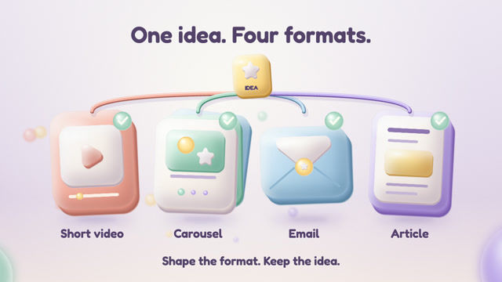
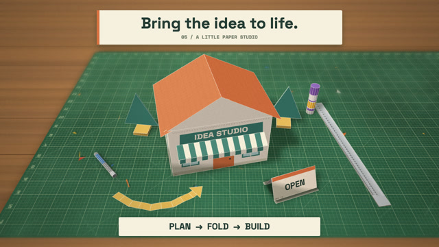
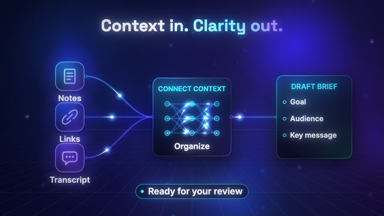
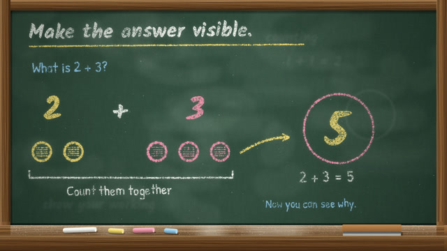
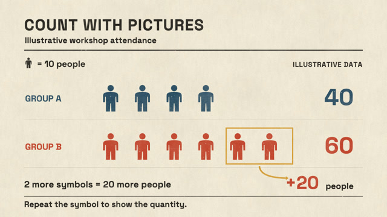
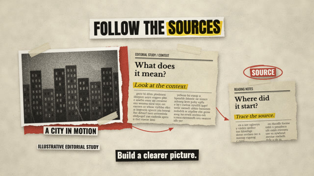
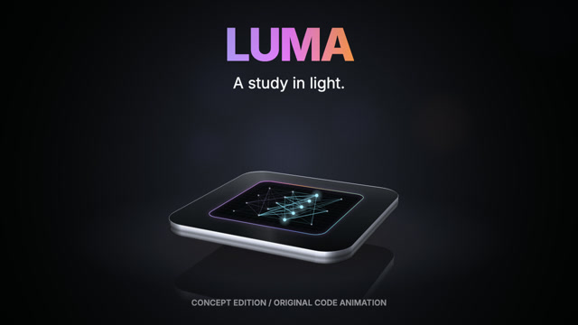
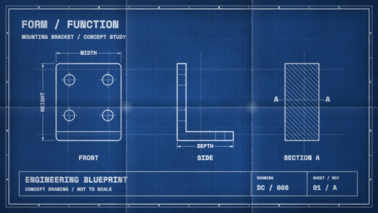
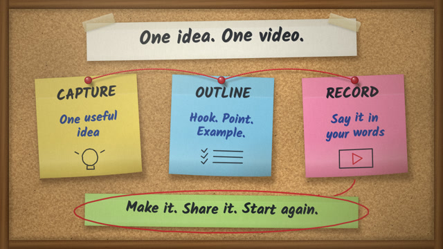
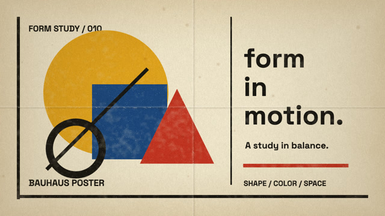

A FIELD GUIDE TO ANIMATED B-ROLL
Find your
kind of motion.
86 original style directions.
Find a look. Watch it move.
Copy the prompt and make it yours.
Watch a full animation or explore a live style study. Click any preview to open it, then use Next to keep browsing.
WATCH & CREATE
Full animations

FULL ANIMATION EXAMPLE / SOFT CLAY
One idea. Four formats.
Watch the 15-second story with sound. Get the complete prompt, working code, and MP4.

FULL ANIMATION EXAMPLE / PAPERCRAFT
A flat plan. A little paper studio.
Watch a paper template fold into a storefront in 15 seconds. Includes sound, the full prompt, working code, and MP4.

FULL ANIMATION EXAMPLE / TECH GLOW
Context in. Clarity out.
Watch the 15-second workflow with neon paths and electronic sound. Includes the full prompt, working code, and MP4.

FULL ANIMATION EXAMPLE / CHALKBOARD
Make the answer visible.
A 15-second handwritten lesson with dusty chalk and writing sounds. Includes the full prompt, working code, and MP4.

FULL ANIMATION EXAMPLE / ISOTYPE PICTOGRAMS
Count with pictures.
A 15-second pictogram comparison with textured paper and stamping sounds. Includes the full prompt, working code, and MP4.

FULL ANIMATION EXAMPLE / EDITORIAL ESSAY COLLAGE
Follow the sources.
A 15-second paper collage with halftone imagery, highlighted clippings, and sound. Includes the full prompt, working code, and MP4.

FULL ANIMATION EXAMPLE / PRODUCT LAUNCH REVEAL
Meet LUMA. A study in light.
A 15-second cinematic product concept with moving highlights and sound. Includes the full prompt, working code, and MP4.

FULL ANIMATION EXAMPLE / ENGINEERING BLUEPRINT
From lines to structure.
A 15-second drafting sequence with front, side, and section views. Includes sound, the full prompt, working code, and MP4.

FULL ANIMATION EXAMPLE / STICKY-NOTE WALL
One idea. One video.
A 15-second video plan built with curled notes, marker handwriting, and red yarn. Includes sound, the full prompt, working code, and MP4.

FULL ANIMATION EXAMPLE / BAUHAUS POSTER
Form in motion.
A 15-second geometric poster with primary colors, printed texture, and workshop sounds. Includes the full prompt, working code, and MP4.
EXPLORE THE LIBRARY
86 style studies
Live previews with prompts for your own topic.
No styles found.
Try a material like paper, a color like blue, or a mood like calm.